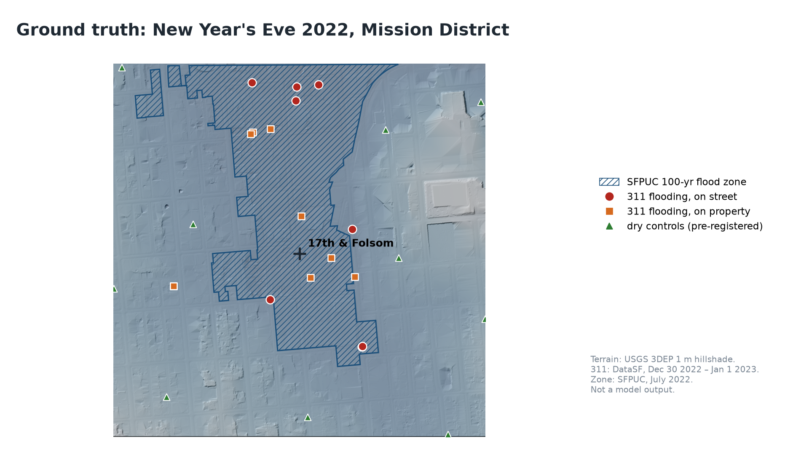
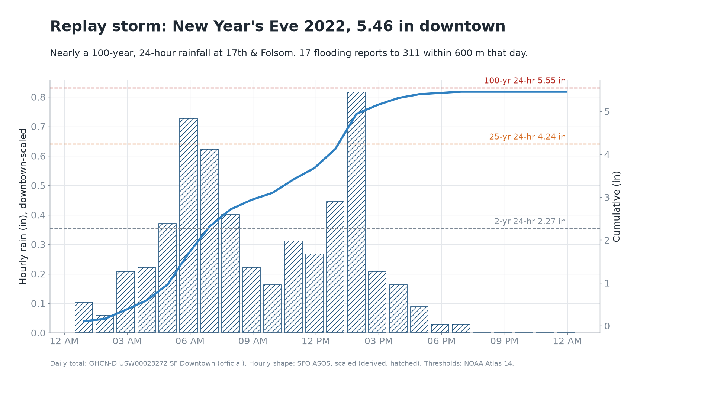

<meta charset="utf-8">
<title>Waterline</title>
<meta name="claude:viewport-fit-sides" content="cover">
<meta name="share-url" content="https://claude.ai/artifact/DzXzkyFJqVJwShFK1SdimN">
<link rel="stylesheet" href="https://fonts.googleapis.com/css2?family=Barlow+Semi+Condensed:wght@500;600;700&family=IBM+Plex+Sans:wght@400;500;600&family=IBM+Plex+Mono:wght@400;500&display=swap">
<style>
/* Layout: five full-width acts on a night-harbor ground, each a headline + one hero visual; data is always the star.
   Deliberately single-theme (dark): this runs on a projector and a phone outdoors at dusk. */
:root {
  --night: #0a1016; --deep: #0f1922; --panel: #142230; --rule: #22374a;
  --fg: #e8eef3; --muted: #8fa3b5; --water: #3aa0ff; --water-2: #1d5f99;
  --amber: #f2b33d; --orange: #f08a3c; --red: #ff6b5b; --ground: #b79f7d;
  --display: "Barlow Semi Condensed", "Arial Narrow", sans-serif;
  --body: "IBM Plex Sans", system-ui, sans-serif;
  --mono: "IBM Plex Mono", ui-monospace, monospace;
  color-scheme: dark;
}
* { box-sizing: border-box; }
html { background: var(--night); }
body { background: var(--night); color: var(--fg); font: 17px/1.55 var(--body); margin: 0; }
.wrap { max-width: 1160px; margin: 0 auto; padding-left: max(16px, env(safe-area-inset-left, 0px)); padding-right: max(16px, env(safe-area-inset-right, 0px)); }
a { color: var(--water); }
.eyebrow { font: 500 .78rem/1.4 var(--mono); letter-spacing: .14em; text-transform: uppercase; color: var(--water); }
h1, h2 { font-family: var(--display); font-weight: 700; margin: 0; text-wrap: balance; letter-spacing: -.005em; }
h2 { font-size: clamp(2rem, 4.6vw, 3.4rem); line-height: 1.02; }
.lede { font-size: 1.15rem; max-width: 62ch; color: var(--fg); margin: 0; }
.note { font-size: .9rem; color: var(--muted); max-width: 70ch; margin: 0; }
.num { font-variant-numeric: tabular-nums; }

/* hero */
.hero { position: relative; overflow: hidden; padding-block: 72px 0; background:
  radial-gradient(1200px 500px at 70% -10%, #17324b 0%, transparent 60%), var(--night); }
.hero .wrap { display: grid; gap: 22px; position: relative; z-index: 2; padding-block: 0 140px; }
.brand { display: flex; align-items: center; gap: 12px; font: 700 1.4rem var(--display); letter-spacing: .02em; }
.brand svg { width: 30px; height: 46px; }
.hero h1 { font-size: clamp(2.6rem, 7vw, 5.6rem); line-height: .95; max-width: 15ch; }
.big { font: 700 clamp(4.5rem, 14vw, 10rem)/.85 var(--display); color: var(--amber); font-variant-numeric: tabular-nums; }
.big small { font-size: .32em; color: var(--fg); margin-left: .2em; }
.waves { position: absolute; left: 0; right: 0; bottom: 0; height: 150px; z-index: 1; }
.waves svg { position: absolute; bottom: 0; width: 200%; height: 100%; animation: drift 18s linear infinite; }
.waves svg + svg { animation-duration: 28s; opacity: .55; }
@keyframes drift { from { transform: translateX(0); } to { transform: translateX(-50%); } }
@media (prefers-reduced-motion: reduce) { .waves svg { animation: none; } }

/* acts */
.act { padding-block: 88px; border-top: 1px solid var(--rule); }
.act:nth-of-type(even) { background: var(--deep); }
.act .wrap { display: grid; gap: 28px; }
.head { display: grid; gap: 12px; }
.grid2 { display: grid; grid-template-columns: minmax(0, 1.25fr) minmax(0, 1fr); gap: 28px; align-items: start; }
@media (max-width: 860px) { .grid2 { grid-template-columns: 1fr; } }
.panel { background: var(--panel); border: 1px solid var(--rule); border-radius: 6px; padding: 18px; min-width: 0; }
.chips { display: flex; flex-wrap: wrap; gap: 10px; }
.stat { display: grid; gap: 2px; padding: 12px 16px; border-left: 3px solid var(--water); background: var(--panel); min-width: 0; }
.stat b { font: 700 2rem/1 var(--display); font-variant-numeric: tabular-nums; }
.stat span { font-size: .85rem; color: var(--muted); }
.stat.alert { border-left-color: var(--amber); } .stat.alert b { color: var(--amber); }
.stats { display: grid; grid-template-columns: repeat(auto-fit, minmax(190px, 1fr)); gap: 12px; }
svg text { font-family: var(--mono); }
.chart { width: 100%; height: auto; display: block; }

/* 3D */
.scene { position: relative; aspect-ratio: 16 / 9; max-width: 100%; background: #070c11; border: 1px solid var(--rule); border-radius: 6px; overflow: hidden; }
.scene canvas { width: 100% !important; height: 100% !important; display: block; cursor: grab; }
.scene .hud { position: absolute; left: 14px; top: 12px; right: 14px; display: flex; justify-content: space-between; gap: 12px; pointer-events: none; font: 500 .8rem var(--mono); color: var(--muted); }
.scene .readout { position: absolute; left: 14px; bottom: 14px; background: rgba(10,16,22,.82); border: 1px solid var(--rule); border-radius: 4px; padding: 10px 14px; display: grid; gap: 2px; }
.scene .readout b { font: 700 1.9rem/1 var(--display); color: var(--water); }
.scene .readout span { font-size: .85rem; color: var(--fg); }
.scene .loading { position: absolute; inset: 0; display: grid; place-items: center; color: var(--muted); font: .9rem var(--mono); }
.seg { display: flex; flex-wrap: wrap; gap: 8px; }
.seg button { font: 600 .9rem var(--body); color: var(--fg); background: transparent; border: 1.5px solid var(--rule); border-radius: 999px; padding: 7px 14px; cursor: pointer; }
.seg button[aria-pressed="true"] { background: var(--water); border-color: var(--water); color: #04121f; }
.seg button.assumed[aria-pressed="true"] { background: repeating-linear-gradient(135deg, var(--water) 0 6px, var(--water-2) 6px 9px); color: #fff; }
.seg button:focus-visible { outline: 2px solid var(--amber); outline-offset: 2px; }
.banner { display: inline-block; font: 700 .72rem/1 var(--mono); letter-spacing: .12em; padding: 6px 10px; background: var(--red); color: #1a0806; border-radius: 3px; }

/* footage slots */
.slot { position: relative; aspect-ratio: 16 / 9; max-width: 100%; border: 1px dashed #3b5670; border-radius: 6px; overflow: hidden; display: grid; align-content: end;
  background: repeating-linear-gradient(90deg, transparent 0 22px, rgba(58,160,255,.05) 22px 23px), radial-gradient(600px 300px at 30% 30%, #15304a, #0b141c); }
.slot::before { content: attr(data-shot); position: absolute; left: 18px; top: 14px; font: 700 clamp(2.4rem, 6vw, 4rem)/1 var(--display); color: rgba(58,160,255,.35); letter-spacing: .02em; }
.slot video { position: absolute; inset: 0; width: 100%; height: 100%; object-fit: cover; }
.slot .cap { position: relative; margin: 12px; padding: 10px 12px; background: rgba(10,16,22,.85); border-radius: 4px; display: grid; gap: 2px; max-width: 46ch; }
.slot .cap b { font: 600 .95rem var(--body); }
.slot .cap span { font: .78rem var(--mono); color: var(--muted); }
.slot.filled { border-style: solid; }
.slot.filled .cap { display: none; }

figure { margin: 0; display: grid; gap: 8px; min-width: 0; }
figure img { width: 100%; height: auto; display: block; border-radius: 6px; border: 1px solid var(--rule); }
figcaption { font-size: .88rem; color: var(--muted); }

/* brief */
.brief { font: .86rem/1.55 var(--mono); white-space: pre-wrap; background: #08121a; border: 1px solid var(--rule); border-radius: 6px; padding: 16px; margin: 0; overflow-x: auto; color: #cfe0ee; }
.brief .h { color: var(--amber); }
.agents { display: flex; flex-wrap: wrap; gap: 8px; align-items: center; font: .82rem var(--mono); }
.agent { padding: 6px 10px; border: 1px solid var(--rule); border-radius: 4px; background: var(--panel); }
.agent.lead { border-color: var(--water); color: var(--water); }
.arrow { color: var(--muted); }
.prov { display: inline-flex; gap: 6px; align-items: center; font: .78rem var(--mono); color: var(--muted); }
.sw { width: 14px; height: 10px; border: 1.5px solid var(--water); display: inline-block; }
.sw.o { background: var(--water); } .sw.a { background: repeating-linear-gradient(135deg, var(--water) 0 3px, transparent 3px 5px); }

/* drains */
.drains { display: grid; grid-template-columns: minmax(0, 1.1fr) minmax(0, 1fr); gap: 24px; align-items: start; }
@media (max-width: 860px) { .drains { grid-template-columns: 1fr; } }
.dlist { display: grid; grid-template-columns: repeat(auto-fill, minmax(160px, 1fr)); gap: 10px; }
.dcard { background: var(--panel); border: 1px solid var(--rule); border-radius: 6px; padding: 10px 12px; display: grid; gap: 4px; min-width: 0; }
.dcard .r { font: 700 1.5rem/1 var(--display); color: var(--amber); }
.dcard .a { font: .76rem var(--mono); color: var(--muted); }
.dcard .v { font: 600 .78rem var(--mono); padding: 3px 8px; border-radius: 999px; border: 1px dashed #3b5670; color: var(--muted); justify-self: start; }
.steps { display: grid; grid-template-columns: repeat(auto-fit, minmax(220px, 1fr)); gap: 14px; }
.step { background: var(--panel); border-top: 3px solid var(--amber); padding: 14px 16px; border-radius: 0 0 6px 6px; display: grid; gap: 6px; min-width: 0; }
.step b { font: 700 1.2rem var(--display); }
.step p { margin: 0; font-size: .93rem; color: var(--muted); }

/* live gauge */
.live { display: inline-flex; flex-wrap: wrap; align-items: center; gap: 10px; font: 500 .9rem var(--mono); color: var(--fg); background: rgba(20,34,48,.85); border: 1px solid var(--rule); border-radius: 999px; padding: 8px 14px; justify-self: start; }
.live .dot { width: 9px; height: 9px; border-radius: 50%; background: var(--muted); }
.live.on .dot { background: #3ddc84; box-shadow: 0 0 0 0 rgba(61,220,132,.6); animation: pulse 2s infinite; }
@keyframes pulse { 70% { box-shadow: 0 0 0 10px rgba(61,220,132,0); } 100% { box-shadow: 0 0 0 0 rgba(61,220,132,0); } }
@media (prefers-reduced-motion: reduce) { .live.on .dot { animation: none; } }
.photos { display: grid; grid-template-columns: repeat(auto-fill, minmax(220px, 1fr)); gap: 12px; }
.ph { background: var(--panel); border: 1px solid var(--rule); border-radius: 6px; overflow: hidden; display: grid; min-width: 0; margin: 0; }
.ph img { width: 100%; aspect-ratio: 4 / 3; object-fit: cover; display: block; border: 0; border-radius: 0; }
.ph .m { padding: 10px 12px; display: grid; gap: 4px; }
.ph .t { font: .76rem var(--mono); color: var(--muted); }
.ph .p { font: 600 .95rem var(--body); }
.chip { font: 600 .76rem var(--mono); padding: 3px 9px; border-radius: 999px; border: 1px dashed #3b5670; color: var(--muted); justify-self: start; }
.chip.done { border: 1px solid var(--water); color: var(--water); }
.city { display: grid; grid-template-columns: minmax(0, 1.4fr) minmax(0, 1fr); gap: 20px; align-items: start; }
@media (max-width: 900px) { .city { grid-template-columns: 1fr; } }
.mapwrap { position: relative; border: 1px solid var(--rule); border-radius: 6px; overflow: hidden; background: #0a1016; }
.mapwrap canvas { display: block; width: 100%; height: auto; cursor: crosshair; touch-action: manipulation; }
.layers { display: flex; flex-wrap: wrap; gap: 8px; }
.layers label { display: inline-flex; align-items: center; gap: 6px; font: .82rem var(--mono); color: var(--fg); background: var(--panel); border: 1px solid var(--rule); border-radius: 999px; padding: 5px 12px; cursor: pointer; }
.side { display: grid; gap: 14px; min-width: 0; }
.block { background: var(--panel); border: 1px solid var(--rule); border-radius: 6px; padding: 14px 16px; display: grid; gap: 10px; min-width: 0; }
.block h3 { margin: 0; font: 700 1.3rem var(--display); }
.block table { width: 100%; border-collapse: collapse; font: .82rem var(--mono); }
.block td, .block th { padding: 5px 6px; border-bottom: 1px solid var(--rule); text-align: left; }
.block th { color: var(--muted); font-weight: 500; }
.tbl { overflow-x: auto; }
.hot { display: grid; gap: 6px; }
.hot button { display: grid; grid-template-columns: 2.4rem minmax(0, 1fr) auto; gap: 10px; align-items: center; text-align: left; background: var(--panel); color: var(--fg); border: 1px solid var(--rule); border-radius: 6px; padding: 8px 12px; cursor: pointer; font: .88rem var(--body); }
.hot button[aria-pressed="true"] { border-color: var(--amber); box-shadow: inset 3px 0 0 var(--amber); }
.hot button b { font: 700 1.3rem var(--display); color: var(--amber); }
.hot button span.k { font: .74rem var(--mono); color: var(--muted); }
.range { display: grid; gap: 4px; font: .82rem var(--mono); color: var(--muted); }
.range input { width: 100%; accent-color: var(--water); }
.tl { width: 100%; height: auto; display: block; }
.qr { display: flex; flex-wrap: wrap; gap: 22px; align-items: center; }
.qr .code { background: #fff; padding: 12px; border-radius: 8px; width: 184px; height: 184px; }
.qr .code svg { width: 100%; height: 100%; display: block; }
/* argon moments */
.moments { display: grid; grid-template-columns: repeat(auto-fit, minmax(240px, 1fr)); gap: 12px; }
.mo { display: grid; gap: 8px; align-content: start; background: linear-gradient(160deg, #18304a, #101b26 70%); border: 1px solid #2c4864; border-radius: 8px; padding: 16px; color: var(--fg); text-decoration: none; min-width: 0; }
.mo:hover, .mo:focus-visible { border-color: var(--water); outline: none; }
.mo i { font: 600 .72rem/1 var(--mono); letter-spacing: .12em; text-transform: uppercase; color: var(--amber); font-style: normal; }
.mo b { font: 700 1.25rem/1.15 var(--display); }
.mo span { font-size: .88rem; color: var(--muted); }
/* storm desk */
.deskbar { display: flex; flex-wrap: wrap; gap: 12px; align-items: center; justify-content: space-between; background: var(--panel); border: 1px solid var(--rule); border-radius: 8px; padding: 12px 16px; }
.clock { font: 700 clamp(1.6rem, 3.5vw, 2.4rem)/1 var(--display); font-variant-numeric: tabular-nums; }
.phase { font: 700 .74rem/1 var(--mono); letter-spacing: .12em; text-transform: uppercase; padding: 6px 10px; border-radius: 999px; background: var(--water); color: #04121f; }
.phase.Warning { background: var(--amber); } .phase.Event { background: var(--red); } .phase.Recovery { background: #3ddc84; }
.ctrls { display: flex; gap: 8px; }
.ctrls button { font: 600 .9rem var(--body); color: var(--fg); background: transparent; border: 1.5px solid var(--rule); border-radius: 6px; padding: 7px 14px; cursor: pointer; }
.ctrls button.primary { background: var(--water); border-color: var(--water); color: #04121f; }
.ctrls button:focus-visible { outline: 2px solid var(--amber); outline-offset: 2px; }
.desk { display: grid; grid-template-columns: minmax(0, 1.05fr) minmax(0, 1fr); gap: 18px; align-items: start; }
@media (max-width: 900px) { .desk { grid-template-columns: 1fr; } }
.kpis { display: grid; grid-template-columns: repeat(3, minmax(0, 1fr)); gap: 8px; }
.kpi { background: var(--panel); border: 1px solid var(--rule); border-radius: 6px; padding: 10px 12px; display: grid; gap: 2px; min-width: 0; }
.kpi b { font: 700 1.6rem/1 var(--display); font-variant-numeric: tabular-nums; }
.kpi span { font-size: .78rem; color: var(--muted); }
.feed { display: grid; gap: 10px; max-height: 760px; overflow-y: auto; padding-right: 4px; }
.ev { background: var(--panel); border: 1px solid var(--rule); border-left: 3px solid var(--water); border-radius: 6px; padding: 12px 14px; display: grid; gap: 6px; min-width: 0; }
.ev.now { border-color: var(--amber); box-shadow: 0 0 0 1px var(--amber) inset; }
.ev .top { display: flex; flex-wrap: wrap; gap: 8px; align-items: center; font: .76rem var(--mono); color: var(--muted); }
.ev .tag { text-transform: uppercase; letter-spacing: .1em; color: var(--water); }
.ev h4 { margin: 0; font: 700 1.15rem/1.2 var(--display); }
.ev p { margin: 0; font-size: .92rem; color: #c9d6e2; }
.ev .ar { font: .76rem var(--mono); color: var(--amber); }
.ev .row { display: flex; flex-wrap: wrap; gap: 8px; align-items: center; }
.ap { font: 600 .74rem var(--mono); padding: 3px 9px; border-radius: 999px; border: 1px dashed #3b5670; color: var(--muted); }
.ap.req { border: 1px solid var(--amber); color: var(--amber); } .ap.ok { border: 1px solid #3ddc84; color: #3ddc84; } .ap.sun { border-style: dashed; color: var(--muted); }
.ev button.approve { font: 600 .78rem var(--body); background: var(--amber); color: #1a1205; border: 0; border-radius: 4px; padding: 4px 10px; cursor: pointer; }
.desk canvas { width: 100%; height: auto; display: block; border: 1px solid var(--rule); border-radius: 6px; background: #0a1016; }
/* close */
.close { padding-block: 110px 80px; text-align: left; background: radial-gradient(900px 400px at 20% 120%, #17324b 0%, transparent 60%), var(--night); }
.close h2 { font-size: clamp(2.4rem, 6vw, 4.6rem); max-width: 18ch; }
footer { border-top: 1px solid var(--rule); padding-block: 28px 48px; font-size: .82rem; color: var(--muted); }
footer .wrap { display: grid; gap: 8px; }
</style>

<header class="hero" aria-labelledby="h1">
  <div class="wrap">
    <div class="brand"><svg viewBox="0 0 72 112" aria-hidden="true"><defs><pattern id="hh" width="8" height="8" patternUnits="userSpaceOnUse" patternTransform="rotate(45)"><line x1="0" y1="0" x2="0" y2="8" stroke="#3aa0ff" stroke-width="2.5"/></pattern></defs><rect x="14" y="6" width="44" height="92" fill="none" stroke="#e8eef3" stroke-width="5"/><rect x="6" y="54" width="60" height="14" fill="url(#hh)"/><rect x="6" y="68" width="60" height="30" fill="#3aa0ff"/><line x1="0" y1="68" x2="72" y2="68" stroke="#9cd0ff" stroke-width="4"/></svg>Waterline</div>
    <p class="eyebrow">San Francisco · El Niño winter 2026–27</p>
    <h1 id="h1">On October 11, San Francisco Bay crossed flood stage.</h1>
    <div class="big num" id="heroPeak">7.57<small>ft</small></div>
    <p class="lede">It's October, before king-tide season. A strong El Niño has the Bay running a foot above prediction. Waterline shows what this winter means on your street, and what to do before the storm arrives.</p>
    <p class="live" id="live" aria-live="polite"><span class="dot"></span><span id="liveTxt">Checking the San Francisco tide gauge…</span></p>
  </div>
  <div class="waves" aria-hidden="true">
    <svg viewBox="0 0 2400 150" preserveAspectRatio="none"><path d="M0 70 Q150 40 300 70 T600 70 T900 70 T1200 70 T1500 70 T1800 70 T2100 70 T2400 70 V150 H0Z" fill="#123553"/></svg>
    <svg viewBox="0 0 2400 150" preserveAspectRatio="none"><path d="M0 95 Q200 70 400 95 T800 95 T1200 95 T1600 95 T2000 95 T2400 95 V150 H0Z" fill="#1d5f99"/></svg>
  </div>
</header>

<main>
  <section class="act" aria-labelledby="am" style="padding-block:56px">
    <div class="wrap">
      <div class="head"><p class="eyebrow">Gemini 4 Argon in Waterline</p><h2 id="am" style="font-size:clamp(1.7rem,3.6vw,2.6rem)">Six things it does here that weren't possible last week.</h2></div>
      <div class="moments">
        <a class="mo" href="#a3"><i>Self-graded modeling</i><b>Writes its own flood model, then grades it against a real storm.</b><span>It iterates until its predictions match the 311 reports from New Year's Eve 2022.</span></a>
        <a class="mo" href="#a3"><i>Multimodal</i><b>Reads citizens' photos and measures the water.</b><span>Curbs, tires and doorsteps become depths it checks itself against.</span></a>
        <a class="mo" href="#sd"><i>Long-horizon agent</i><b>Runs a 72-hour Storm Desk and re-plans when the forecast moves.</b><span>One goal, a plan, and no turn-by-turn prompting.</span></a>
        <a class="mo" href="#sd"><i>Orchestration</i><b>Fans out to every neighborhood at once.</b><span>Argon coordinates; Flash subagents rank each zone's drains in parallel.</span></a>
        <a class="mo" href="#a6"><i>Long decode</i><b>Builds an unprepared block from scratch in one run.</b><span>Lidar, drains, history and a brief, with every tool call logged.</span></a>
        <a class="mo" href="#sd"><i>Human in the loop</i><b>Drafts the messages and work orders, then waits.</b><span>Nothing goes out until a person approves it.</span></a>
      </div>
    </div>
  </section>
  <!-- ACT 1 -->
  <section class="act" aria-labelledby="a1">
    <div class="wrap">
      <div class="head">
        <p class="eyebrow">Act 1 · It's already here</p>
        <h2 id="a1">The El Niño Kelvin wave is already in the tide gauge.</h2>
        <p class="lede">A Kelvin wave is a pulse of raised sea level that El Niño sends along the equator and up our coast. You can see it at the Golden Gate gauge: every day this October the Bay has run higher than predicted, and by much more than last year.</p>
      </div>
      <div class="panel"><svg class="chart" id="kelvin" viewBox="0 0 1100 420" role="img" aria-label="Daily water level above prediction at San Francisco, 2026 against 2025"></svg></div>
      <div class="stats">
        <div class="stat"><b class="num" id="s_oct26">+0.98 ft</b><span>October 2026 average above prediction</span></div>
        <div class="stat"><b class="num" id="s_oct25">+0.26 ft</b><span>October 2025, same gauge</span></div>
        <div class="stat alert"><b class="num">7.57 ft</b><span>Oct 11 peak, above the NWS minor flood line (7.04)</span></div>
        <div class="stat"><b class="num">70–83%</b><span>NOAA's odds this El Niño is the strongest since 1950</span></div>
      </div>
      <div class="panel" style="display:grid;gap:10px">
        <p class="eyebrow" style="color:var(--amber)">This isn't one event. More waves are coming.</p>
        <svg class="tl" id="kelvinTl" viewBox="0 0 1100 235" role="img" aria-label="Timeline of Kelvin-wave pulses, NOAA updates and king tides from September 2026 to March 2027"></svg>
        <p class="note">Expected pulses: oceanographer Dillon Amaya (NC State), as reported by NPR and ABC7. King tides: NOAA predictions. Gauge peak: measured.</p>
      </div>
      <div class="slot" data-shot="F0" data-src="media/f0_high_water.mp4">
        <div class="cap"><b>Footage F0 · the Bay outside this building, 11:07 AM today</b><span>Real high water at the Embarcadero seawall with the live gauge reading. Recorded Sun Oct 25.</span></div>
      </div>
    </div>
  </section>

  <!-- ACT 2 -->
  <section class="act" aria-labelledby="a2">
    <div class="wrap">
      <div class="head">
        <p class="eyebrow">Act 2 · The resident</p>
        <h2 id="a2">Christmas Eve, 10:37 AM, at the Ferry Building.</h2>
        <p class="lede">The year's highest predicted tide lands on Christmas Eve morning. Stack this winter's conditions on top of it, layer by layer, on the measured shape of the waterfront: 661,599 lidar points from the USGS 2023 survey.</p>
      </div>
      <div class="seg" role="group" aria-label="Scenario">
        <button type="button" id="sc0" data-i="0" aria-pressed="false">King tide</button>
        <button type="button" id="sc1" data-i="1" aria-pressed="true">+ El Niño baseline</button>
        <button type="button" id="sc2" data-i="2" class="assumed" aria-pressed="false">+ big storm</button>
        <button type="button" id="sc3" data-i="3" class="assumed" aria-pressed="false">Stress test</button>
      </div>
      <div class="scene" id="scene">
        <div class="loading" id="sceneLoading">Loading lidar…</div>
        <div class="hud"><span>USGS 3DEP lidar · Ferry Building &amp; Embarcadero · vertical ×1.5 · drag to orbit</span><span id="stressTag" hidden><span class="banner">STRESS TEST · NOT A FORECAST</span></span></div>
        <div class="readout"><b class="num" id="lvl">8.2 ft</b><span id="gap">1.9 ft below the promenade</span><span class="prov" id="prov"><i class="sw o"></i>NOAA prediction + measured offset</span></div>
      </div>
      <div class="grid2">
        <div class="slot" data-shot="F2" data-src="media/f2_resident_ar.mp4">
          <div class="cap"><b>Footage F2–F4 · the water line in AR, on the seawall</b><span>iPhone, ARCore Geospatial with LiDAR occlusion. Recorded Sun Oct 25, 4:30–6:00 PM.</span></div>
        </div>
        <div class="panel" style="display:grid;gap:12px">
          <p class="eyebrow" style="color:var(--amber)">What the resident gets</p>
          <p style="margin:0"><b>High water near the Ferry Building, Thu Dec 24, <span id="winTxt">9:30–11:45 AM</span>.</b> Expect water <span id="gapTxt">2 ft</span> below the promenade; waves may splash over. Avoid the seawall edge.</p>
          <p style="margin:0;color:var(--muted)">Marea alta cerca del Ferry Building, jue 24 dic. El agua llegará a <span id="gapTxtEs">2 pies</span> del paseo; las olas pueden saltar. Aléjese del borde del malecón.</p>
          <p class="note">Hatched means assumed. In the realistic case still water stays below the promenade; waves on top of it are what flooded the Embarcadero in June 2026, and they aren't modeled.</p>
        </div>
      </div>
    </div>
  </section>

  <!-- ACT 3 -->
  <section class="act" aria-labelledby="a3">
    <div class="wrap">
      <div class="head">
        <p class="eyebrow">Act 3 · The proof</p>
        <h2 id="a3">We've seen this storm before. New Year's Eve 2022.</h2>
        <p class="lede">5.46 inches fell downtown, nearly a 100-year, 24-hour storm. In the Mission, 17 people called 311 to report flooding within 600 m of 17th &amp; Folsom. We gave Gemini 4 Argon that storm and those reports, not a model, and it rewrote its flood model until the two agreed.</p>
      </div>
      <div class="grid2">
        <figure><figcaption>Ground truth: 311 reports, the city's 100-year flood zone (held back from Argon) and ten dry check points committed before any modeling.</figcaption></figure>
        <div style="display:grid;gap:14px;min-width:0">
          <figure><figcaption>The replay storm, hour by hour.</figcaption></figure>
          <div class="stats">
            <div class="stat"><b class="num" id="scoreBase">—</b><span>Argon's first model, verification score</span></div>
            <div class="stat alert"><b class="num" id="scoreFinal">—</b><span>After it iterated against the real night (target 0.75)</span></div>
          </div>
          <p class="note">Scores are computed live on Sun Oct 25 and filled in here.</p>
        </div>
      </div>
      <div class="head" style="margin-top:12px">
        <p class="eyebrow" style="color:var(--amber)">That night, in their own photos</p>
        <p class="lede">Eight people attached photos to their 311 reports. Gemini reads each one, measuring the water against curbs, tires and doorsteps, and that becomes a depth to check the model against.</p>
      </div>
      <div class="photos" id="photos"></div>
      <p class="note">Photos: SF 311 public records (DataSF), Dec 31 2022 – Jan 1 2023. Plates blurred; locations shown to the street.</p>
    </div>
  </section>

  <!-- ACT 4 -->
  <section class="act" aria-labelledby="a4">
    <div class="wrap">
      <div class="head">
        <p class="eyebrow">Act 4 · The city</p>
        <h2 id="a4">A block-by-block timeline, drafted before the crews are called.</h2>
        <p class="lede">A team of Gemini managed agents re-runs every forecast cycle. Each one reaches data through a single MCP server, so every number carries its source. The coordinator turns the stack into a timeline against NOAA's flood thresholds and drafts the brief. A person decides.</p>
      </div>
      <div class="agents" aria-label="Agent pipeline">
        <span class="agent">Forecast</span><span class="arrow">→</span><span class="agent">Coastal</span><span class="arrow">→</span><span class="agent">Terrain</span><span class="arrow">→</span><span class="agent">Drainage</span><span class="arrow">→</span><span class="agent">Hydraulics</span><span class="arrow">→</span><span class="agent lead">Coordinator · Gemini 4 Argon</span>
        <span class="prov" style="margin-left:auto"><i class="sw o"></i>official <i class="sw"></i>derived <i class="sw a"></i>assumed</span>
      </div>
      <div class="panel"><svg class="chart" id="tide" viewBox="0 0 1100 480" role="img" aria-label="Predicted water level at San Francisco, Dec 23 to 25, with El Niño baseline and storm scenario against flood thresholds"></svg></div>
      <pre class="brief" id="brief" aria-label="Drafted situation brief"></pre>
    </div>
  </section>

  <!-- STORM DESK -->
  <section class="act" aria-labelledby="sd">
    <div class="wrap">
      <div class="head">
        <p class="eyebrow">Act 5 · The Storm Desk</p>
        <h2 id="sd">Seventy-two hours before the storm, the agent goes to work.</h2>
        <p class="lede">A Gemini managed agent runs the city's flood prep end to end: it spots the risk, ranks the drains, drafts notices to the people who adopted them, writes work orders for crews, stages sites, re-plans when the forecast moves, and reviews its own run afterwards. A person approves every message that leaves the building.</p>
        <p class="note" id="sdScenario"></p>
      </div>
      <div class="deskbar">
        <div style="display:grid;gap:4px"><span class="clock" id="sdClock">Mon Dec 21, 6:00 AM</span><span class="note" id="sdUntil"></span></div>
        <span class="phase" id="sdPhase">Watch</span>
        <div class="ctrls"><button type="button" class="primary" id="sdPlay">Play</button><button type="button" id="sdStep">Step</button><button type="button" id="sdReset">Reset</button></div>
      </div>
      <div class="desk">
        <div style="display:grid;gap:12px;min-width:0">
          <canvas id="sdMap" width="900" height="900" aria-label="Map of the agent's current targets"></canvas>
          <div class="kpis">
            <div class="kpi"><b id="kDrains">—</b><span>street drains to clear</span></div>
            <div class="kpi"><b id="kDrafts">0</b><span>drafts awaiting approval</span></div>
            <div class="kpi"><b id="kApproved">0</b><span>approved by a person</span></div>
            <div class="kpi"><b id="kSites">0</b><span>sites staged</span></div>
            <div class="kpi"><b id="kAlerts">0</b><span>alert languages</span></div>
            <div class="kpi"><b id="kWO">—</b><span>work orders (from Sunday's scout)</span></div>
          </div>
        </div>
        <div class="feed" id="sdFeed" aria-live="polite"></div>
      </div>
    </div>
  </section>

  <!-- ACT 5 -->
  <section class="act" aria-labelledby="a5">
    <div class="wrap">
      <div class="head">
        <p class="eyebrow">Act 6 · Before the storm</p>
        <h2 id="a5">Twelve drains matter most. A robot finds out which ones are blocked.</h2>
        <p class="lede">Clogged grates turn ordinary storms into street floods. San Francisco has more than 25,000 drains and crews deep-clean 5,000 to 9,000 a year. Waterline ranks the <span id="dCount">468</span> real city drains around 17th &amp; Folsom by how much water reaches each grate. A rover scouts the top twelve, Gemini reads each photo, and volunteers get a list before the rain.</p>
      </div>
      <div class="drains">
        <div class="panel"><svg class="chart" id="dmap" viewBox="0 0 1000 1000" role="img" aria-label="Map of storm drains around 17th and Folsom with the twelve highest-priority drains numbered"></svg>
          <p class="note" style="margin-top:8px">Drains: SFPUC, the Adopt-a-Drain dataset. Ranking: water reaching each grate on the lidar terrain, each drain intercepting what reaches it. Red: 311 flooding reports, Dec 31 2022.</p></div>
        <div style="display:grid;gap:14px;min-width:0">
          <div class="slot" data-shot="R1" data-src="media/r1_rover_scout.mp4">
            <div class="cap"><b>Footage R1 · rover scouts a grate</b><span>Pi rover with depth camera approaches a leaf-covered grate; Gemini labels it. Recorded before the event.</span></div>
          </div>
          <div class="dlist" id="dlist"></div>
          <p class="note">Grate condition comes from photos taken on the drain walk; Gemini classifies each as clear, partly blocked or blocked on Sun Oct 25.</p>
        </div>
      </div>
      <div class="steps">
        <div class="step"><b>1 · Rank</b><p>Agents trace runoff over the lidar terrain to each of the city's drains and rank them.</p></div>
        <div class="step"><b>2 · Scout</b><p>A rover or a volunteer's phone photographs the top grates. Gemini labels each one.</p></div>
        <div class="step"><b>3 · Dispatch</b><p>The coordinator sends the blocked ones to Adopt-a-Drain volunteers and Public Works, with a deadline before the rain.</p></div>
        <div class="step"><b>4 · Re-run</b><p>The hydraulics agent re-runs with those drains cleared, and the city sees how much ponding it avoided.</p></div>
      </div>
      <div class="grid2">
        <div class="stats">
          <div class="stat alert"><b class="num" id="payoffPct">—</b><span>Less flooded area at 17th &amp; Folsom with the blocked priority drains cleared, New Year's Eve storm replay. Computed Sun Oct 25.</span></div>
          <div class="stat"><b class="num" id="lift">1.6×</b><span>Past flooding reports near the city's top-ranked drains, against a random sample (citywide check, Act 7)</span></div>
        </div>
        <div class="slot" data-shot="A1" data-src="media/a1_adopt_clear.mp4">
          <div class="cap"><b>Footage A1 · I adopted drain N-339755 at 17th &amp; Folsom</b><span>Clearing the grate before the rain, as Adopt-a-Drain asks. Recorded Thu Oct 22.</span></div>
        </div>
      </div>
    </div>
  </section>

  <section class="act" aria-labelledby="a6">
    <div class="wrap">
      <div class="head">
        <p class="eyebrow">Act 7 · The whole city</p>
        <h2 id="a6">Every drain and every low spot in San Francisco, ranked before Christmas.</h2>
        <p class="lede">The same pipeline ran citywide on the USGS lidar: <span id="cDrains">23,835</span> drains ranked, the street low spots where water collects first, and the city's 311 flooding history. Tap anywhere on the map to see that block.</p>
      </div>
      <div class="layers" role="group" aria-label="Map layers">
        <label><input type="checkbox" id="lyDrains" checked> Top 500 drains</label>
        <label><input type="checkbox" id="lyHot" checked> Top 50 low spots</label>
        <label><input type="checkbox" id="ly311"> 311 flooding history</label>
      </div>
      <div class="city">
        <div class="mapwrap"><canvas id="cityMap" width="1200" height="1200" aria-label="Map of San Francisco with ranked drains and flood low spots; tap to inspect a block"></canvas></div>
        <div class="side">
          <div class="block" id="blockPanel">
            <h3 id="bTitle">Pick a block</h3>
            <div class="seg" id="presets" role="group" aria-label="Places"></div>
            <div id="bBody" class="note">Tap the map, or pick a place, to see the drains that matter most within 300 m and that block's flooding history.</div>
          </div>
          <div class="slot" data-shot="V1" data-src="media/v1_any_block.mp4">
            <div class="cap"><b>Footage V1 · an unprepared block, start to finish</b><span>Time-lapse of the managed agents building a new site: lidar, drains, history, depth. Recorded Sun Oct 25.</span></div>
          </div>
        </div>
      </div>
      <div class="stats">
        <div class="stat alert"><b class="num" id="cTop500">9.7</b><span>Past 311 flooding reports within 75 m of the top 500 drains, on average</span></div>
        <div class="stat"><b class="num" id="cRand">6.1</b><span>The same for 500 random drains</span></div>
        <div class="stat"><b class="num" id="cZone">28 of 50</b><span>Top street low spots inside the city's own 100-year flood zone</span></div>
        <div class="stat"><b class="num" id="c311">26,458</b><span>311 flooding reports on the map</span></div>
      </div>
      <div class="head" style="margin-top:8px">
        <p class="eyebrow" style="color:var(--amber)">Drill down · lidar</p>
        <h2 style="font-size:clamp(1.6rem,3.4vw,2.4rem)">Fill a low spot and watch where the water goes.</h2>
      </div>
      <div class="city">
        <div class="scene" id="hsScene"><div class="loading" id="hsLoading">Pick a low spot</div>
          <div class="hud"><span id="hsHud">USGS 3DEP lidar · vertical ×1.5 · drag to orbit</span></div>
          <div class="readout"><b class="num" id="hsLvl">0 ft</b><span id="hsArea">above the lowest point</span></div>
        </div>
        <div class="side">
          <div class="hot" id="hotList"></div>
          <div class="range"><label for="hsDepth">Water above the lowest point: <span id="hsDepthTxt">3.0 ft</span></label><input type="range" id="hsDepth" min="0" max="8" step="0.25" value="3"></div>
          <p class="note">Elevation-only fill from the lowest lidar ground point near the centre: no pipes, no rain timing. It shows the shape of the bowl, not a forecast.</p>
        </div>
      </div>
    </div>
  </section>

  <section class="close" aria-labelledby="c1">
    <div class="wrap" style="display:grid;gap:18px">
      <p class="eyebrow">Waterline</p>
      <h2 id="c1">Strong El Niño. Street level. This winter.</h2>
      <p class="lede">From the tide gauge to your block to the drain on your corner: prediction, proof and prevention, run by Gemini 4 Argon managed agents.</p>
      <div class="qr"><div class="code" id="qr" aria-label="QR code to open this demo on your phone"></div>
        <div style="display:grid;gap:6px;max-width:40ch"><b style="font:700 1.5rem var(--display)">Raise the water yourself.</b><span class="note">Scan to open Waterline on your phone and try the Christmas Eve scenarios at the Ferry Building.</span><span class="note" id="qrUrl"></span></div></div>
    </div>
  </section>
</main>

<footer>
  <div class="wrap">
    <p style="margin:0">Screening-level prototype built at the Gemini 4 Argon hackathon, SHACK15, Oct 25 2026. Not an official alert: follow AlertSF and the National Weather Service.</p>
    <p style="margin:0">Data: NOAA CO-OPS 9414290 and Atlas 14 · NOAA CPC ENSO · USGS 3DEP lidar (2023, AWS EPT) · SFPUC 100-year flood map and drain inlets (DataSF) · SF 311 · GHCN-D · Open-Meteo ensembles.</p>
  </div>
</footer>

<script src="https://cdn.jsdelivr.net/npm/three@0.147.0/build/three.min.js"></script>
<script src="https://cdnjs.cloudflare.com/ajax/libs/qrcode-generator/1.4.4/qrcode.min.js"></script>
<script>
(async function () {
  const NS = "http://www.w3.org/2000/svg";
  const C = { fg: "#e8eef3", muted: "#8fa3b5", rule: "#22374a", water: "#3aa0ff", water2: "#1d5f99", amber: "#f2b33d", orange: "#f08a3c", red: "#ff6b5b", ground: "#b79f7d" };
  const el = (tag, attrs = {}, parent) => { const e = document.createElementNS(NS, tag); for (const k in attrs) e.setAttribute(k, attrs[k]); if (parent) parent.appendChild(e); return e; };
  const txt = (parent, x, y, s, attrs = {}) => { const t = el("text", { x, y, fill: C.muted, "font-size": 14, ...attrs }, parent); t.textContent = s; return t; };
  let D, R = {};
  try { D = await (await fetch("story-data.json")).json(); } catch (e) { console.error(e); return; }
  try { const r = await fetch("results.json"); if (r.ok) R = await r.json(); } catch (e) {}
  async function loadBin(url) {
    try { const r = await fetch(url); if (r.ok) return await r.arrayBuffer(); } catch (e) {}
    try { const r = await fetch(url.replace(".bin", ".b64.txt")); if (!r.ok) return null;
      const s = atob((await r.text()).trim()), u = new Uint8Array(s.length); for (let i = 0; i < s.length; i++) u[i] = s.charCodeAt(i); return u.buffer; } catch (e) { return null; }
  }

  // ---------- Act 1: Kelvin chart ----------
  (function kelvin() {
    const svg = document.getElementById("kelvin"), W = 1100, H = 420, L = 70, R = 90, T = 30, B = 46;
    const y26 = Object.entries(D.kelvin.y2026), y25 = Object.entries(D.kelvin.y2025);
    const t0 = Date.parse("2026-09-01"), t1 = Date.parse("2026-11-01");
    const X = d => L + (Date.parse(d) - t0) / (t1 - t0) * (W - L - R);
    const ymax = 1.5, ymin = -0.1, Y = v => T + (ymax - v) / (ymax - ymin) * (H - T - B);
    for (let v = 0; v <= 1.5001; v += 0.25) { el("line", { x1: L, x2: W - R, y1: Y(v), y2: Y(v), stroke: C.rule, "stroke-width": v === 0 ? 1.5 : 1 }, svg); txt(svg, L - 10, Y(v) + 5, (v > 0 ? "+" : "") + v.toFixed(2), { "text-anchor": "end" }); }
    ["2026-09-01", "2026-09-15", "2026-10-01", "2026-10-15", "2026-11-01"].forEach(d => txt(svg, X(d), H - 16, new Date(d + "T12:00").toLocaleDateString("en-US", { month: "short", day: "numeric" }), { "text-anchor": "middle" }));
    txt(svg, L, 18, "ft above prediction, daily mean, SF tide gauge", { fill: C.muted });
    const path = (pts, f) => pts.map(([d, v], i) => (i ? "L" : "M") + f(d).toFixed(1) + " " + Y(v).toFixed(1)).join(" ");
    el("path", { d: path(y25, d => X(d.replace("2025", "2026"))), fill: "none", stroke: C.muted, "stroke-width": 2.2 }, svg);
    const p26 = el("path", { d: path(y26, X), fill: "none", stroke: C.water, "stroke-width": 4, "stroke-linejoin": "round" }, svg);
    const last26 = y26[y26.length - 1], last25 = y25[y25.length - 1];
    txt(svg, X(last26[0]) + 10, Y(last26[1]) + 5, "2026", { fill: C.water, "font-size": 17, "font-weight": 600 });
    txt(svg, X(last25[0].replace("2025", "2026")) + 8, Y(last25[1]) + 5, "2025", { fill: C.muted, "font-size": 15 });
    const pk = y26.reduce((a, b) => b[1] > a[1] ? b : a);
    el("circle", { cx: X(pk[0]), cy: Y(pk[1]), r: 6, fill: C.amber }, svg);
    txt(svg, X(pk[0]) - 12, Y(pk[1]) - 12, "+" + pk[1].toFixed(2) + " ft, " + new Date(pk[0] + "T12:00").toLocaleDateString("en-US", { month: "short", day: "numeric" }), { fill: C.amber, "text-anchor": "end", "font-size": 15, "font-weight": 600 });
    const len = p26.getTotalLength(); p26.style.strokeDasharray = len; p26.style.strokeDashoffset = 0;
    const mean = (arr, pre) => { const v = arr.filter(([d]) => d.startsWith(pre)).map(x => x[1]); return v.reduce((a, b) => a + b, 0) / v.length; };
    document.getElementById("s_oct26").textContent = "+" + mean(y26, "2026-10").toFixed(2) + " ft";
    document.getElementById("s_oct25").textContent = "+" + mean(y25, "2025-10").toFixed(2) + " ft";
    document.getElementById("heroPeak").firstChild.nodeValue = D.kelvin.peak.v.toFixed(2);
  })();

  // ---------- Act 4: tide timeline + brief ----------
  const S = D.coastal, base = S.baseline_ft, storm = S.storm_typ_ft, th = S.thresholds, plaza = S.plaza_ft_mllw;
  const series = D.tide.series.map(([t, v]) => [t, +v]);
  function windows(off, lvl) {
    const out = []; let cur = null;
    series.forEach(([t, v]) => { const on = v + off >= lvl; if (on && !cur) cur = [t, t, v + off]; else if (on) { cur[1] = t; cur[2] = Math.max(cur[2], v + off); } else if (cur) { out.push(cur); cur = null; } });
    if (cur) out.push(cur); return out;
  }
  const hm = t => { const [d, h] = t.split(" "); let [H, M] = h.split(":").map(Number); const ap = H >= 12 ? "PM" : "AM"; H = H % 12 || 12; return H + ":" + String(M).padStart(2, "0") + " " + ap; };
  const day = t => new Date(t.replace(" ", "T")).toLocaleDateString("en-US", { weekday: "short", month: "short", day: "numeric" });
  (function tide() {
    const svg = document.getElementById("tide"), W = 1100, H = 480, L = 60, R = 170, T = 84, B = 44;
    const n = series.length, X = i => L + i / (n - 1) * (W - L - R), ymin = -1, ymax = 11, Y = v => T + (ymax - v) / (ymax - ymin) * (H - T - B);
    for (let v = 0; v <= 11; v += 2) { el("line", { x1: L, x2: W - R, y1: Y(v), y2: Y(v), stroke: C.rule }, svg); txt(svg, L - 8, Y(v) + 5, v + "", { "text-anchor": "end" }); }
    txt(svg, L, 18, "ft MLLW at the SF gauge · Dec 23–25 2026");
    series.forEach(([t], i) => { if (t.endsWith("00:00")) { el("line", { x1: X(i), x2: X(i), y1: T, y2: H - B, stroke: C.rule, "stroke-dasharray": "2 4" }, svg); txt(svg, X(i) + 6, H - 18, day(t)); } });
    const P = off => series.map(([, v], i) => (i ? "L" : "M") + X(i).toFixed(1) + " " + Y(v + off).toFixed(1)).join(" ");
    const lines = [["nws_minor", "NWS minor", C.amber], ["nos_minor", "NOS minor", C.amber], ["nos_moderate", "NOS moderate", C.orange], ["nos_major", "NOS major", C.red]];
    lines.forEach(([k, lab, col]) => { el("line", { x1: L, x2: W - R, y1: Y(th[k]), y2: Y(th[k]), stroke: col, "stroke-dasharray": "6 5", "stroke-width": 1.4 }, svg); txt(svg, W - R + 8, Y(th[k]) + (k === "nos_major" ? 16 : 5), lab + " " + th[k].toFixed(2), { fill: col }); });
    el("rect", { x: L, width: W - L - R, y: Y(plaza + 0.15), height: Y(plaza - 0.15) - Y(plaza + 0.15), fill: C.ground, opacity: .55 }, svg);
    txt(svg, W - R + 8, Y(plaza) - 10, "Plaza " + plaza.toFixed(1), { fill: C.ground });
    el("pattern", { id: "hatchT", width: 8, height: 8, patternUnits: "userSpaceOnUse", patternTransform: "rotate(45)" }, el("defs", {}, svg)).appendChild(el("line", { x1: 0, y1: 0, x2: 0, y2: 8, stroke: C.water, "stroke-width": 2 }));
    const band = series.map(([, v], i) => (i ? "L" : "M") + X(i).toFixed(1) + " " + Y(v + base + storm).toFixed(1)).join(" ") + " " + series.slice().reverse().map(([, v], j) => "L" + X(n - 1 - j).toFixed(1) + " " + Y(v + base).toFixed(1)).join(" ") + " Z";
    el("path", { d: band, fill: "url(#hatchT)", opacity: .55 }, svg);
    el("path", { d: P(0), fill: "none", stroke: C.muted, "stroke-width": 1.6 }, svg);
    el("path", { d: P(base), fill: "none", stroke: C.water, "stroke-width": 3.4 }, svg);
    const legend = el("g", { transform: `translate(${L},48)` }, svg);
    [["NOAA predicted tide", C.muted, 1.6, 0], ["+ measured El Niño offset (+" + base.toFixed(2) + " ft)", C.water, 3.4, 220]].forEach(([s, c, w, x]) => { el("line", { x1: x, x2: x + 26, y1: 0, y2: 0, stroke: c, "stroke-width": w }, legend); txt(legend, x + 34, 5, s, { fill: C.fg }); });
    el("rect", { x: 590, y: -7, width: 26, height: 14, fill: "url(#hatchT)" }, legend); txt(legend, 624, 5, "+ big-storm surge (+2.0 ft, assumed)", { fill: C.fg });
  })();
  (function brief() {
    const wMinor = windows(base, th.nos_minor), wMod = windows(base + storm, th.nos_moderate), wNws = windows(base, th.nws_minor);
    const kt = S.king_tide, lvl = (+kt.v + base);
    const rows = wNws.map(w => `  ${day(w[0]).padEnd(13)} ${hm(w[0])}–${hm(w[1])}  peak ${w[2].toFixed(2)} ft  ${w[2] >= th.nos_minor ? "NOS MINOR" : "NWS minor"}`).join("\n");
    const b = document.getElementById("brief");
    b.innerHTML = `<span class="h">WATERLINE SITUATION BRIEF · Ferry Building / Embarcadero · draft</span>
Sources: tide = NOAA CO-OPS 9414290 (official) · offset = observed minus predicted, Oct 2026 (official, measured)
         surge = +2.0 ft scenario (assumed) · terrain = USGS 3DEP lidar 2023 (official)

<span class="h">HEADLINE</span>
Coastal flooding at NOS minor likely ${day(kt.t)}, peak ${lvl.toFixed(1)} ft MLLW at ${hm(kt.t)}.
With a big storm on the same tide: NOS moderate, ${(lvl + storm).toFixed(1)} ft. Promenade grade ≈ ${plaza.toFixed(1)} ft.

<span class="h">THRESHOLD WINDOWS (tide + El Niño offset)</span>
${rows || "  none"}
  Storm case reaches NOS moderate in ${wMod.length} window${wMod.length === 1 ? "" : "s"}.

<span class="h">RECOMMENDED ACTIONS (for human decision)</span>
  - Pre-stage Embarcadero crews 1 hr before each window; consider closing seawall-edge access
  - Clear the 12 priority drains near 17th &amp; Folsom before Dec 22 (Act 5)
  - Public message: resident template, EN/ES

<span class="h">LIMITATIONS</span>
  Screening model, not HEC-RAS. Wave overtopping not modeled (hatched). Offset may change as more
  Kelvin waves arrive; refreshed from the live gauge every cycle.`;
    const w0 = wMinor.find(w => w[0].startsWith("2026-12-24")) || wNws.find(w => w[0].startsWith("2026-12-24"));
    if (w0) document.getElementById("winTxt").textContent = hm(w0[0]) + "–" + hm(w0[1]);
  })();

  // ---------- Act 2: lidar scene ----------
  const levels = S.scenarios.map(s => s[1]);
  const provs = S.scenarios.map(s => s[2]);
  let target = levels[1], setLevel = () => {};
  function updateReadout(i) {
    const lv = levels[i], gap = plaza - lv;
    document.getElementById("lvl").textContent = lv.toFixed(1) + " ft";
    document.getElementById("gap").textContent = gap > 0 ? gap.toFixed(1) + " ft below the promenade" : Math.abs(gap).toFixed(1) + " ft above the promenade grade";
    document.getElementById("prov").innerHTML = provs[i] === "official" ? '<i class="sw o"></i>NOAA prediction + measured offset' : '<i class="sw a"></i>includes an assumed surge';
    document.getElementById("stressTag").hidden = i !== 3;
    const g = Math.max(gap, 0).toFixed(1);
    document.getElementById("gapTxt").textContent = g + " ft"; document.getElementById("gapTxtEs").textContent = g + " pies";
  }
  document.querySelectorAll(".seg button").forEach(b => b.addEventListener("click", () => {
    document.querySelectorAll(".seg button").forEach(x => x.setAttribute("aria-pressed", x === b ? "true" : "false"));
    const i = +b.dataset.i; target = levels[i]; updateReadout(i); setLevel(target);
  }));
  updateReadout(1);
  (async function scene() {
    const host = document.getElementById("scene");
    if (!window.THREE) { document.getElementById("sceneLoading").textContent = "3D view unavailable"; return; }
    let buf;
    buf = await loadBin(innerWidth < 760 ? D.lidar.coast_bin.replace(".bin", "_lite.bin") : D.lidar.coast_bin);
    if (!buf) { document.getElementById("sceneLoading").textContent = "Lidar file missing: run scripts/build_story_data.py"; return; }
    const n = Math.floor(buf.byteLength / 14), dv = new DataView(buf);
    const EX = 1.5, M = 3.28084;
    let pos = new Float32Array(n * 3), col = new Float32Array(n * 3), k = 0, sx = 0, sy = 0;
    for (let i = 0; i < n; i++) { const o = i * 14; sx += dv.getFloat32(o, true); sy += dv.getFloat32(o + 4, true); }
    const cx = sx / n, cy = sy / n;
    const pal = { 1: [0.56, 0.62, 0.69], 2: [0.72, 0.62, 0.49], 9: [0.10, 0.26, 0.40], 20: [0.72, 0.62, 0.49] };
    for (let i = 0; i < n; i++) {
      const o = i * 14, c = dv.getUint8(o + 12); if (c === 7 || c === 18) continue;
      const x = dv.getFloat32(o, true) - cx, y = dv.getFloat32(o + 4, true) - cy, z = dv.getFloat32(o + 8, true), it = dv.getUint8(o + 13) / 255;
      pos[k * 3] = x; pos[k * 3 + 1] = z * EX; pos[k * 3 + 2] = -y;
      const p = pal[c] || [0.5, 0.5, 0.5], s = 0.55 + 0.6 * it;
      col[k * 3] = p[0] * s; col[k * 3 + 1] = p[1] * s; col[k * 3 + 2] = p[2] * s; k++;
    }
    pos = pos.subarray(0, k * 3); col = col.subarray(0, k * 3);
    const renderer = new THREE.WebGLRenderer({ antialias: true });
    renderer.setPixelRatio(Math.min(devicePixelRatio, 2));
    host.appendChild(renderer.domElement);
    const scene = new THREE.Scene(); scene.background = new THREE.Color(0x070c11); scene.fog = new THREE.Fog(0x070c11, 500, 1100);
    const cam = new THREE.PerspectiveCamera(42, 16 / 9, 1, 3000);
    const g = new THREE.BufferGeometry(); g.setAttribute("position", new THREE.BufferAttribute(pos, 3)); g.setAttribute("color", new THREE.BufferAttribute(col, 3));
    scene.add(new THREE.Points(g, new THREE.PointsMaterial({ size: 1.15, vertexColors: true, sizeAttenuation: true })));
    // Water only where it can reach from the Bay: flood-fill a 2 m ground grid from lidar water cells.
    let xmin = Infinity, xmax = -Infinity, ymin = Infinity, ymax = -Infinity;
    for (let i = 0; i < k; i++) { const x = pos[i * 3], y = -pos[i * 3 + 2]; if (x < xmin) xmin = x; if (x > xmax) xmax = x; if (y < ymin) ymin = y; if (y > ymax) ymax = y; }
    const CS = 2, GW = Math.ceil((xmax - xmin) / CS), GH = Math.ceil((ymax - ymin) / CS);
    const gz = new Float32Array(GW * GH).fill(Infinity), seed = new Uint8Array(GW * GH);
    for (let i = 0; i < n; i++) {
      const o = i * 14, c = dv.getUint8(o + 12); if (c !== 2 && c !== 9 && c !== 20) continue;
      const gx = Math.floor((dv.getFloat32(o, true) - cx - xmin) / CS), gy = Math.floor((dv.getFloat32(o + 4, true) - cy - ymin) / CS);
      if (gx < 0 || gy < 0 || gx >= GW || gy >= GH) continue;
      const j = gy * GW + gx, z = dv.getFloat32(o + 8, true); if (z < gz[j]) gz[j] = z; if (c === 9) seed[j] = 1;
    }
    const mask = new Uint8Array(GW * GH * 4), tex = new THREE.DataTexture(mask, GW, GH, THREE.RGBAFormat);
    tex.magFilter = THREE.LinearFilter; tex.minFilter = THREE.LinearFilter;
    function flood(levelM) {
      const wet = new Uint8Array(GW * GH), q = [];
      for (let j = 0; j < GW * GH; j++) if (seed[j]) { wet[j] = 1; q.push(j); }
      while (q.length) { const j = q.pop(), x = j % GW, y = (j / GW) | 0;
        for (const [dx, dy] of [[1, 0], [-1, 0], [0, 1], [0, -1]]) { const xx = x + dx, yy = y + dy; if (xx < 0 || yy < 0 || xx >= GW || yy >= GH) continue;
          const jj = yy * GW + xx; if (!wet[jj] && gz[jj] < levelM) { wet[jj] = 1; q.push(jj); } } }
      for (let j = 0; j < GW * GH; j++) { const a = wet[j] ? 255 : 0; mask[j * 4] = mask[j * 4 + 1] = mask[j * 4 + 2] = a; mask[j * 4 + 3] = 255; }
      tex.needsUpdate = true;
    }
    const wm = new THREE.MeshBasicMaterial({ color: 0x3aa0ff, transparent: true, opacity: 0.55, alphaMap: tex, depthWrite: false, side: THREE.DoubleSide });
    const water = new THREE.Mesh(new THREE.PlaneGeometry(GW * CS, GH * CS), wm);
    water.rotation.x = -Math.PI / 2; water.position.set(xmin + GW * CS / 2, 0, -(ymin + GH * CS / 2)); scene.add(water);
    const toY = ft => (ft - 0.06) / M * EX;
    let cur = toY(0.6);
    setLevel = ft => { target = ft; flood((ft - 0.06) / M); };
    setLevel(target);
    let az = Math.atan2(240, -150), elev = 0.5, dist = 470, drag = null, auto = !matchMedia("(prefers-reduced-motion: reduce)").matches;
    const resize = () => { const w = host.clientWidth, h = host.clientHeight; renderer.setSize(w, h, false); cam.aspect = w / h; cam.updateProjectionMatrix(); };
    new ResizeObserver(resize).observe(host); resize();
    renderer.domElement.addEventListener("pointerdown", e => { drag = [e.clientX, e.clientY, az, elev]; auto = false; renderer.domElement.setPointerCapture(e.pointerId); });
    renderer.domElement.addEventListener("pointermove", e => { if (!drag) return; az = drag[2] - (e.clientX - drag[0]) * 0.006; elev = Math.min(1.35, Math.max(0.12, drag[3] + (e.clientY - drag[1]) * 0.004)); });
    renderer.domElement.addEventListener("pointerup", () => drag = null);
    renderer.domElement.addEventListener("wheel", e => { e.preventDefault(); dist = Math.min(900, Math.max(160, dist * (1 + Math.sign(e.deltaY) * 0.08))); }, { passive: false });
    document.getElementById("sceneLoading").remove();
    (function loop() {
      if (auto) az += 0.0009;
      cur += (toY(target) - cur) * 0.035; water.position.y = cur;
      cam.position.set(Math.sin(az) * Math.cos(elev) * dist, 25 + Math.sin(elev) * dist, Math.cos(az) * Math.cos(elev) * dist);
      cam.lookAt(0, 12, 0);
      renderer.render(scene, cam); requestAnimationFrame(loop);
    })();
  })();

  // ---------- Act 5: drain map ----------
  (function drains() {
    const svg = document.getElementById("dmap"), dd = D.drains, [x0, y0, x1, y1] = dd.bbox;
    const kx = Math.cos(37.7634 * Math.PI / 180), Wd = (x1 - x0) * kx, Hd = (y1 - y0), s = 1000 / Math.max(Wd, Hd);
    const P = ([lo, la]) => [((lo - x0) * kx) * s, 1000 - (la - y0) * s];
    svg.setAttribute("viewBox", `0 ${1000 - Hd * s} ${Wd * s} ${Hd * s}`);
    el("rect", { x: 0, y: 1000 - Hd * s, width: Wd * s, height: Hd * s, fill: "#0b141c" }, svg);
    dd.others.forEach(p => { const [x, y] = P(p); el("circle", { cx: x, cy: y, r: 3.2, fill: "#4c6378" }, svg); });
    dd.nye311.forEach(p => { const [x, y] = P(p); el("circle", { cx: x, cy: y, r: 7, fill: C.red, stroke: "#0b141c", "stroke-width": 2 }, svg); });
    const [sx, sy] = P(dd.site); el("path", { d: `M${sx - 14} ${sy}H${sx + 14}M${sx} ${sy - 14}V${sy + 14}`, stroke: C.fg, "stroke-width": 3 }, svg);
    txt(svg, sx + 16, sy - 12, "17th & Folsom", { fill: C.fg, "font-size": 22, "font-weight": 600 });
    dd.top.forEach(d => { const [x, y] = P([d.lon, d.lat]); el("circle", { cx: x, cy: y, r: 19, fill: C.amber, stroke: "#0b141c", "stroke-width": 3 }, svg); txt(svg, x, y + 7, d.rank, { fill: "#141414", "font-size": 20, "font-weight": 700, "text-anchor": "middle" }); });
    document.getElementById("dCount").textContent = dd.count;
    const list = document.getElementById("dlist");
    dd.top.forEach(d => { const c = document.createElement("div"); c.className = "dcard";
      const v = (R.scout || {})[d.rank];
      c.innerHTML = `<span class="r">#${d.rank}</span><span class="a">${d.asset} · ${(d.area_m2 / 1000).toFixed(1)}k m² drains here</span><span class="v"${v ? ' style="border-style:solid;color:' + (v === "blocked" ? "#ff6b5b" : v === "clear" ? "#3ddc84" : "#f2b33d") + '"' : ""}>${v || "scout pending"}</span>`; list.appendChild(c); });
  })();

  // ---------- live gauge ----------
  (async function live() {
    const box = document.getElementById("live"), tx = document.getElementById("liveTxt");
    const y26 = Object.entries(D.kelvin.y2026), last = y26[y26.length - 1];
    try {
      const base = "https://api.tidesandcurrents.noaa.gov/api/prod/datagetter?station=9414290&date=today&datum=MLLW&units=english&time_zone=lst_ldt&format=json&application=waterline";
      const [o, p] = await Promise.all([fetch(base + "&product=water_level").then(r => r.json()), fetch(base + "&product=predictions").then(r => r.json())]);
      const obs = (o.data || []).filter(x => x.v !== ""), lo = obs[obs.length - 1];
      const pm = Object.fromEntries((p.predictions || []).map(x => [x.t, +x.v]));
      if (!lo || pm[lo.t] === undefined) throw 0;
      const res = +lo.v - pm[lo.t], hh = lo.t.split(" ")[1];
      tx.textContent = `Live · SF tide gauge ${hh}: ${(+lo.v).toFixed(2)} ft MLLW, ${res >= 0 ? "+" : ""}${res.toFixed(2)} ft above prediction`;
      box.classList.add("on");
    } catch (e) {
      tx.textContent = `SF tide gauge, ${new Date(last[0] + "T12:00").toLocaleDateString("en-US", { month: "short", day: "numeric" })}: +${last[1].toFixed(2)} ft above prediction (daily mean)`;
    }
  })();

  // ---------- Kelvin timeline ----------
  (function timeline() {
    const svg = document.getElementById("kelvinTl"), W = 1100, L = 30, RR = 30;
    const t0 = Date.parse("2026-09-01"), t1 = Date.parse("2027-04-01"), X = d => L + (Date.parse(d) - t0) / (t1 - t0) * (W - L - RR);
    el("line", { x1: L, x2: W - RR, y1: 130, y2: 130, stroke: C.rule, "stroke-width": 2 }, svg);
    ["2026-09-01", "2026-10-01", "2026-11-01", "2026-12-01", "2027-01-01", "2027-02-01", "2027-03-01"].forEach(d => {
      el("line", { x1: X(d), x2: X(d), y1: 124, y2: 136, stroke: C.muted }, svg);
      txt(svg, X(d) + 4, 152, new Date(d + "T12:00").toLocaleDateString("en-US", { month: "short" }), { "font-size": 13 });
    });
    const today = new Date().toISOString().slice(0, 10);
    if (Date.parse(today) > t0 && Date.parse(today) < t1) { el("line", { x1: X(today), x2: X(today), y1: 112, y2: 170, stroke: C.fg, "stroke-dasharray": "3 4" }, svg); txt(svg, X(today) + 4, 168, "today", { fill: C.fg, "font-size": 12 }); }
    const col = { measured: C.amber, observed: C.water, expected: C.orange, predicted: "#7fb8e8", scheduled: C.muted };
    const lanes = [22, 46, 70, 94], laneEnd = [0, 0, 0, 0];
    const short = e => e.kind === "expected" ? "Next Kelvin wave (expected)" : e.kind === "predicted" ? "King tides " + (e.text.match(/[\d.]+ ft/) || [""])[0]
      : e.kind === "scheduled" ? "NOAA ENSO update" : e.kind === "measured" ? "Gauge 7.57 ft: flood stage" : e.date === "2026-09-18" ? "Bay +6 in above normal" : "SoCal +6–8 in";
    D.kelvin_outlook.forEach(e => {
      const c = col[e.kind] || C.muted;
      if (e.date_start && Date.parse(e.date_end) - Date.parse(e.date_start) > 90 * 864e5) {
        el("rect", { x: X(e.date_start), y: 192, width: X(e.date_end) - X(e.date_start), height: 10, fill: c, opacity: .45, rx: 3 }, svg);
        txt(svg, X(e.date_start), 222, "Strong El Niño · more Kelvin waves · sea level may stay high into spring 2027", { fill: C.fg, "font-size": 13 });
        return;
      }
      const x0 = X(e.date || e.date_start), x1 = e.date_end ? X(e.date_end) : x0;
      if (e.date_end) el("rect", { x: x0, y: 122, width: Math.max(5, x1 - x0), height: 16, fill: c, rx: 3, opacity: .9 }, svg);
      else el("circle", { cx: x0, cy: 130, r: 6.5, fill: c }, svg);
      const label = short(e), w = label.length * 7.9 + 10, lx = Math.min(x0 + 3, W - w);
      let li = laneEnd.findIndex(end => end < lx); if (li < 0) li = laneEnd.indexOf(Math.min(...laneEnd));
      laneEnd[li] = lx + w; const y = lanes[li];
      el("line", { x1: x0, x2: x0, y1: y + 5, y2: 122, stroke: c, "stroke-width": 1, opacity: .7 }, svg);
      txt(svg, lx, y, label, { fill: c, "font-size": 13 });
    });
  })();

  // ---------- photos + results.json ----------
  (function photos() {
    const box = document.getElementById("photos"), PD = R.photo_depths || {}, MP = R.model_at_photos || {};
    D.photos.forEach(p => {
      const d = document.createElement("figure"); d.className = "ph";
      const g = PD[p.id], m = MP[p.id];
      const chip = g ? `<span class="chip done">Gemini: ~${g.depth_in} in${g.reference ? " · vs " + g.reference : ""}</span>` : `<span class="chip">Gemini depth reading · Sun</span>`;
      const mod = m ? `<span class="chip done">Model: ${m.p50_in} in</span>` : "";
      d.innerHTML = `<div class="m"><span class="t">${new Date(p.time).toLocaleDateString("en-US", { month: "short", day: "numeric" })} · ${p.time.slice(11, 16)} · ${p.kind === "On_street" ? "street" : "property"}</span><span class="p">${p.place}</span>${chip}${mod}</div>`;
      box.appendChild(d);
    });
    if (R.verify) { document.getElementById("scoreBase").textContent = (+R.verify.baseline).toFixed(2); document.getElementById("scoreFinal").textContent = (+R.verify.final).toFixed(2); }
    if (R.payoff && R.payoff.pct_reduction) document.getElementById("payoffPct").textContent = "−" + Math.round(R.payoff.pct_reduction) + "%";
  })();

  // ---------- city map + any block ----------
  (function city() {
    const cw = D.citywide, cv = document.getElementById("cityMap"), ctx = cv.getContext("2d");
    const S = cv.width / cw.w; cv.height = Math.round(cw.h * S);
    const img = new Image(); img.src = cw.basemap;
    const ly = { d: document.getElementById("lyDrains"), h: document.getElementById("lyHot"), f: document.getElementById("ly311") };
    const sm = cw.summary, rnd = sm.random500_mean_311_75m_p50_p95[0];
    document.getElementById("cDrains").textContent = sm.inlets_ranked.toLocaleString();
    document.getElementById("cTop500").textContent = sm.top500_mean_311_75m.toFixed(1);
    document.getElementById("cRand").textContent = rnd.toFixed(1);
    document.getElementById("cZone").textContent = sm.top50_hotspots_in_sfpuc_zone + " of 50";
    document.getElementById("c311").textContent = sm.flood311_reports.toLocaleString();
    document.getElementById("lift").textContent = (sm.top500_mean_311_75m / rnd).toFixed(1) + "×";
    // lon/lat -> map px via a least-squares affine fit on the hotspots (they carry both)
    const H = cw.hotspots;
    const fit = k => { const M = [[0, 0, 0], [0, 0, 0], [0, 0, 0]], b = [0, 0, 0];
      H.forEach(h => { const a = [h[8][0], h[8][1], 1]; for (let i = 0; i < 3; i++) { b[i] += a[i] * h[k]; for (let j = 0; j < 3; j++) M[i][j] += a[i] * a[j]; } });
      const m = M.map((r, i) => [...r, b[i]]);
      for (let i = 0; i < 3; i++) { let p = i; for (let j = i + 1; j < 3; j++) if (Math.abs(m[j][i]) > Math.abs(m[p][i])) p = j; [m[i], m[p]] = [m[p], m[i]];
        for (let j = 0; j < 3; j++) if (j !== i) { const f = m[j][i] / m[i][i]; for (let q = i; q < 4; q++) m[j][q] -= f * m[i][q]; } }
      return [0, 1, 2].map(i => m[i][3] / m[i][i]); };
    const ax = fit(0), ay = fit(1), toPx = (lon, lat) => [ax[0] * lon + ax[1] * lat + ax[2], ay[0] * lon + ay[1] * lat + ay[2]];
    let sel = null;
    function draw() {
      ctx.fillStyle = "#0a1016"; ctx.fillRect(0, 0, cv.width, cv.height);
      if (img.complete && img.naturalWidth) ctx.drawImage(img, 0, 0, cv.width, cv.height);
      if (ly.f.checked) { ctx.fillStyle = "rgba(255,107,91,.4)"; cw.flood311.forEach(([x, y]) => ctx.fillRect(x * S - 1, y * S - 1, 2.2, 2.2)); }
      if (ly.d.checked) { ctx.fillStyle = "#f2b33d"; for (const d of cw.drains) { if (d[2] > 500) continue; ctx.beginPath(); ctx.arc(d[0] * S, d[1] * S, 2 + 3.5 * (501 - d[2]) / 500, 0, 7); ctx.fill(); } }
      if (ly.h.checked) { ctx.strokeStyle = "#3aa0ff"; ctx.lineWidth = 2.5; H.forEach(h => { ctx.beginPath(); ctx.arc(h[0] * S, h[1] * S, 10, 0, 7); ctx.stroke(); }); }
      if (sel) { ctx.strokeStyle = "#e8eef3"; ctx.lineWidth = 2; ctx.setLineDash([6, 5]); ctx.beginPath(); ctx.arc(sel[0] * S, sel[1] * S, 300 / cw.m_per_px * S, 0, 7); ctx.stroke(); ctx.setLineDash([]); }
    }
    img.onload = draw; Object.values(ly).forEach(c => c.addEventListener("change", draw)); draw();
    function inspect(x, y, name) {
      sel = [x, y]; draw();
      const rpx = 300 / cw.m_per_px, near = cw.drains.filter(d => Math.hypot(d[0] - x, d[1] - y) <= rpx).sort((a, b) => a[2] - b[2]);
      const n311 = cw.flood311.filter(p => Math.hypot(p[0] - x, p[1] - y) <= rpx).length;
      const hs = H.filter(h => Math.hypot(h[0] - x, h[1] - y) <= 600 / cw.m_per_px).sort((a, b) => a[2] - b[2])[0];
      document.getElementById("bTitle").textContent = name || "This block";
      const rows = near.slice(0, 6).map(d => `<tr><td>#${d[2].toLocaleString()}</td><td>${d[7]}</td><td>${Math.round(d[4] * 100)} cm</td><td>${d[6]}</td></tr>`).join("");
      document.getElementById("bBody").innerHTML = `<p style="margin:0">${near.length} city drains within 300 m · <b>${n311}</b> past 311 flooding reports within 300 m.${hs ? ` Nearest top low spot: <b>#${hs[2]}</b>, ${hs[4].toFixed(1)} m deep, ${hs[3].toLocaleString()} m².` : ""}</p>` +
        (rows ? `<div class="tbl"><table><thead><tr><th>City rank</th><th>Drain</th><th>Low spot</th><th>311 nearby</th></tr></thead><tbody>${rows}</tbody></table></div>` : "") +
        `<p class="note" style="margin:0">Rank among ${sm.inlets_ranked.toLocaleString()} drains citywide. Low spot = lidar depression within 15 m.</p>`;
    }
    cv.addEventListener("click", e => { const r = cv.getBoundingClientRect(); inspect((e.clientX - r.left) / r.width * cw.w, (e.clientY - r.top) / r.height * cw.h); });
    const places = [["17th & Folsom", -122.4150, 37.7634], ["Mission Creek", -122.3960, 37.7720], ["Islais Creek", -122.3890, 37.7505], ["Ferry Building", -122.3935, 37.7955], ["Marina", -122.4370, 37.8030], ["Outer Sunset", -122.5070, 37.7600]];
    const pr = document.getElementById("presets");
    places.forEach(([n, lo, la]) => { const b = document.createElement("button"); b.type = "button"; b.textContent = n; b.setAttribute("aria-pressed", "false");
      b.onclick = () => { pr.querySelectorAll("button").forEach(x => x.setAttribute("aria-pressed", x === b ? "true" : "false")); const [x, y] = toPx(lo, la); inspect(x, y, n); }; pr.appendChild(b); });
  })();

  // ---------- hotspot drill-down: lidar bowl fill ----------
  (function hotspots() {
    const list = document.getElementById("hotList"), host = document.getElementById("hsScene"), slider = document.getElementById("hsDepth");
    const ranks = { hs02_folsom: 2, hs01_soma: 1, hs04_islais: 4, hs07_bayview: 7, hs03_greathwy: 3 };
    let renderer, scene, cam, setDepth = () => {}, az = 0.8, elev = 0.6, dist = 360, drag = null, token = 0;
    D.hotspot_scenes.forEach((h, i) => {
      const hs = D.citywide.hotspots.find(x => x[2] === ranks[h.id]);
      const b = document.createElement("button"); b.type = "button"; b.setAttribute("aria-pressed", "false");
      b.innerHTML = `<b>#${ranks[h.id]}</b><span>${h.title}<br><span class="k">${hs ? hs[3].toLocaleString() + " m² · " + hs[6] + " past 311 reports nearby" : ""}</span></span><span class="k">${hs && hs[7] ? "100-yr zone" : ""}</span>`;
      b.onclick = () => { list.querySelectorAll("button").forEach(x => x.setAttribute("aria-pressed", x === b ? "true" : "false")); open(h); };
      list.appendChild(b);
      if (i === 0) setTimeout(() => b.click(), 60);
    });
    async function open(h) {
      if (!window.THREE) return;
      const my = ++token, ld = document.getElementById("hsLoading"); if (ld) ld.textContent = "Loading lidar…";
      const buf = await loadBin(h.bin); if (!buf || my !== token) return;
      const n = Math.floor(buf.byteLength / 14), dv = new DataView(buf), EX = 1.5;
      const pos = new Float32Array(n * 3), col = new Float32Array(n * 3); let k = 0, sx = 0, sy = 0;
      for (let i = 0; i < n; i++) { sx += dv.getFloat32(i * 14, true); sy += dv.getFloat32(i * 14 + 4, true); }
      const cx = sx / n, cy = sy / n, CS = 2, half = 170, G = Math.ceil(2 * half / CS), gz = new Float32Array(G * G).fill(Infinity);
      const pal = { 1: [0.56, 0.62, 0.69], 2: [0.72, 0.62, 0.49], 9: [0.10, 0.26, 0.40], 17: [0.62, 0.56, 0.72] };
      for (let i = 0; i < n; i++) { const o = i * 14, c = dv.getUint8(o + 12); if (c === 7 || c === 18) continue;
        const x = dv.getFloat32(o, true) - cx, y = dv.getFloat32(o + 4, true) - cy, z = dv.getFloat32(o + 8, true), it = dv.getUint8(o + 13) / 255;
        pos[k * 3] = x; pos[k * 3 + 1] = z; pos[k * 3 + 2] = -y; const p = pal[c] || [0.5, 0.5, 0.5], s = 0.55 + 0.6 * it;
        col[k * 3] = p[0] * s; col[k * 3 + 1] = p[1] * s; col[k * 3 + 2] = p[2] * s; k++;
        if (c === 2) { const gx = Math.floor((x + half) / CS), gy = Math.floor((y + half) / CS); if (gx >= 0 && gy >= 0 && gx < G && gy < G) { const j = gy * G + gx; if (z < gz[j]) gz[j] = z; } } }
      // bowl bottom = 5th-percentile ground within 45 m of the hotspot centre (ignores single pits like ramps);
      // seed = the ground cell nearest the centre at or below that level
      const near = []; for (let gy = 0; gy < G; gy++) for (let gx = 0; gx < G; gx++) { const j = gy * G + gx, d = Math.hypot(gx * CS - half, gy * CS - half); if (d < 45 && gz[j] < Infinity) near.push([gz[j], d, j]); }
      near.sort((a, b) => a[0] - b[0]); const sz = near.length ? near[Math.floor(near.length * 0.05)][0] : 0;
      let seed = -1, bd = Infinity; near.forEach(([z, d, j]) => { if (z <= sz + 0.05 && d < bd) { bd = d; seed = j; } });
      const zs = Array.from({ length: Math.min(k, 20000) }, (_, i) => pos[Math.floor(i * k / Math.min(k, 20000)) * 3 + 1]).sort((a, b) => a - b), z0 = zs[Math.floor(zs.length * 0.02)];
      for (let i = 0; i < k; i++) pos[i * 3 + 1] = (pos[i * 3 + 1] - z0) * EX;
      if (!renderer) {
        renderer = new THREE.WebGLRenderer({ antialias: true }); renderer.setPixelRatio(Math.min(devicePixelRatio, 2)); host.appendChild(renderer.domElement);
        cam = new THREE.PerspectiveCamera(42, 16 / 9, 1, 3000);
        const rs = () => { const w = host.clientWidth, hh = host.clientHeight; renderer.setSize(w, hh, false); cam.aspect = w / hh; cam.updateProjectionMatrix(); };
        new ResizeObserver(rs).observe(host); rs();
        renderer.domElement.addEventListener("pointerdown", e => { drag = [e.clientX, e.clientY, az, elev]; renderer.domElement.setPointerCapture(e.pointerId); });
        renderer.domElement.addEventListener("pointermove", e => { if (!drag) return; az = drag[2] - (e.clientX - drag[0]) * 0.006; elev = Math.min(1.35, Math.max(0.15, drag[3] + (e.clientY - drag[1]) * 0.004)); });
        renderer.domElement.addEventListener("pointerup", () => drag = null);
        const still = matchMedia("(prefers-reduced-motion: reduce)").matches;
        (function loop() { if (scene) { cam.position.set(Math.sin(az) * Math.cos(elev) * dist, 15 + Math.sin(elev) * dist, Math.cos(az) * Math.cos(elev) * dist); cam.lookAt(0, 6, 0); renderer.render(scene, cam); }
          if (!drag && !still) az += 0.0008; requestAnimationFrame(loop); })();
      }
      const sc = new THREE.Scene(); sc.background = new THREE.Color(0x070c11);
      const g = new THREE.BufferGeometry(); g.setAttribute("position", new THREE.BufferAttribute(pos.subarray(0, k * 3), 3)); g.setAttribute("color", new THREE.BufferAttribute(col.subarray(0, k * 3), 3));
      sc.add(new THREE.Points(g, new THREE.PointsMaterial({ size: 0.9, vertexColors: true })));
      const mask = new Uint8Array(G * G * 4), tex = new THREE.DataTexture(mask, G, G, THREE.RGBAFormat); tex.magFilter = tex.minFilter = THREE.LinearFilter;
      const water = new THREE.Mesh(new THREE.PlaneGeometry(G * CS, G * CS), new THREE.MeshBasicMaterial({ color: 0x3aa0ff, transparent: true, opacity: 0.62, alphaMap: tex, depthWrite: false, side: THREE.DoubleSide }));
      water.rotation.x = -Math.PI / 2; sc.add(water);
      setDepth = ft => { const lvl = sz + ft * 0.3048, wet = new Uint8Array(G * G), q = seed >= 0 ? [seed] : []; let cnt = 0; if (seed >= 0) wet[seed] = 1;
        while (q.length) { const j = q.pop(); cnt++; const x = j % G, y = (j / G) | 0;
          for (const [dx, dy] of [[1, 0], [-1, 0], [0, 1], [0, -1]]) { const xx = x + dx, yy = y + dy; if (xx < 0 || yy < 0 || xx >= G || yy >= G) continue; const jj = yy * G + xx; if (!wet[jj] && gz[jj] < lvl) { wet[jj] = 1; q.push(jj); } } }
        for (let j = 0; j < G * G; j++) { const a = wet[j] ? 255 : 0; mask[j * 4] = mask[j * 4 + 1] = mask[j * 4 + 2] = a; mask[j * 4 + 3] = 255; } tex.needsUpdate = true;
        water.position.y = (lvl - z0) * EX + 0.05;
        document.getElementById("hsLvl").textContent = ft.toFixed(1) + " ft";
        document.getElementById("hsArea").textContent = `above the lowest point · ${(cnt * CS * CS).toLocaleString()} m² under water`;
        document.getElementById("hsDepthTxt").textContent = ft.toFixed(1) + " ft"; };
      scene = sc; setDepth(+slider.value);
      document.getElementById("hsHud").textContent = `USGS 3DEP lidar · ${h.title} · vertical ×1.5 · drag to orbit`;
      const ld2 = document.getElementById("hsLoading"); if (ld2) ld2.remove();
    }
    slider.addEventListener("input", () => setDepth(+slider.value));
  })();

  // ---------- QR for judges ----------
  (function qr() {
    const url = (document.querySelector('meta[name="share-url"]') || {}).content || location.href.split("#")[0];
    document.getElementById("qrUrl").textContent = url.replace(/^https?:\/\//, "");
    if (!window.qrcode) return; const q = qrcode(0, "M"); q.addData(url); q.make();
    document.getElementById("qr").innerHTML = q.createSvgTag({ cellSize: 4, margin: 0, scalable: true });
  })();

  // ---------- Storm Desk ----------
  (function desk() {
    const SD = D.citywide.storm_desk, cw = D.citywide, ev = SD.events;
    document.getElementById("sdScenario").textContent = SD.scenario;
    const cv = document.getElementById("sdMap"), ctx = cv.getContext("2d"), S = cv.width / cw.w; cv.height = Math.round(cw.h * S);
    const img = new Image(); img.src = cw.basemap;
    const feed = document.getElementById("sdFeed"), peak = Date.parse(SD.events.find(e => e.tag === "peak").t);
    let i = -1, timer = null, approved = 0, pulse = 0;
    const K = { drains: "kDrains", drafts: "kDrafts", approved: "kApproved", sites: "kSites", alerts: "kAlerts", work_orders: "kWO" };
    const st = { drains: "—", drafts: 0, approved: 0, sites: 0, alerts: 0, work_orders: "—" };
    const fmt = t => new Date(t).toLocaleString("en-US", { weekday: "short", month: "short", day: "numeric", hour: "numeric", minute: "2-digit" });
    function drawMap() {
      ctx.fillStyle = "#0a1016"; ctx.fillRect(0, 0, cv.width, cv.height);
      if (img.complete && img.naturalWidth) ctx.drawImage(img, 0, 0, cv.width, cv.height);
      const e = ev[Math.max(i, 0)]; if (!e) return;
      const r = 4 + 3 * Math.abs(Math.sin(pulse));
      e.targets.forEach(([x, y, k]) => { ctx.beginPath(); ctx.arc(x * S, y * S, k === "drain" ? 3.2 : r + 5, 0, 7);
        if (k === "drain") { ctx.fillStyle = "#f2b33d"; ctx.fill(); } else { ctx.strokeStyle = k === "coast" ? "#ff6b5b" : "#3aa0ff"; ctx.lineWidth = 3; ctx.stroke(); } });
    }
    (function anim() { pulse += 0.06; drawMap(); requestAnimationFrame(anim); })();
    const apLabel = a => a === "required" ? '<span class="ap req">Draft · needs approval</span><button type="button" class="approve">Approve (demo)</button>' : a === "approved" ? '<span class="ap ok">Approved by duty manager</span>' : a === "sunday" ? '<span class="ap sun">Computed live Sun Oct 25</span>' : '<span class="ap">Automatic · no outbound action</span>';
    function show(n) {
      while (i < n) {
        i++; const e = ev[i];
        feed.querySelectorAll(".ev.now").forEach(x => x.classList.remove("now"));
        const c = document.createElement("article"); c.className = "ev now";
        c.innerHTML = `<div class="top"><span>${fmt(e.t)}</span><span class="tag">${e.tag}</span></div><h4>${e.title}</h4><p>${e.body}</p><span class="ar">Argon · ${e.argon}</span><div class="row">${apLabel(e.approval)}</div>`;
        const b = c.querySelector("button.approve"); if (b) b.onclick = () => { b.parentElement.innerHTML = '<span class="ap ok">Approved (demo)</span>'; approved++; st.approved++; st.drafts = Math.max(0, st.drafts - (+b.dataset.n || 1)); paint(); };
        if (b) b.dataset.n = e.metrics.drafts || 1;
        feed.prepend(c);
        const m = e.metrics;
        if (m.drains) st.drains = m.drains; if (m.drafts) st.drafts += m.drafts; if (m.approved) { st.approved += m.approved; st.drafts = Math.max(0, st.drafts - 323); }
        if (m.sites) st.sites = m.sites; if (m.alerts) st.alerts = m.alerts; if (m.work_orders) st.work_orders = R.scout ? Object.values(R.scout).filter(v => v === "blocked").length : m.work_orders;
        if (m.phase) { const p = document.getElementById("sdPhase"); p.textContent = m.phase; p.className = "phase " + m.phase; }
        if (e.approval === "required" && e.tag !== "notify") st.drafts += 1;
        document.getElementById("sdClock").textContent = fmt(e.t);
        const hrs = Math.round((peak - Date.parse(e.t)) / 36e5);
        document.getElementById("sdUntil").textContent = hrs > 0 ? `${hrs} hours before the Christmas Eve peak` : hrs === 0 ? "Peak tide" : `${-hrs} hours after the peak`;
      }
      paint();
    }
    function paint() { for (const k in K) document.getElementById(K[k]).textContent = typeof st[k] === "number" ? st[k].toLocaleString() : st[k]; }
    const play = document.getElementById("sdPlay");
    function stop() { clearInterval(timer); timer = null; play.textContent = "Play"; }
    play.onclick = () => { if (timer) return stop(); if (i >= ev.length - 1) reset(); play.textContent = "Pause";
      timer = setInterval(() => { if (i >= ev.length - 1) return stop(); show(i + 1); }, 3200); };
    document.getElementById("sdStep").onclick = () => { stop(); if (i < ev.length - 1) show(i + 1); };
    function reset() { stop(); feed.innerHTML = ""; i = -1; Object.assign(st, { drains: "—", drafts: 0, approved: 0, sites: 0, alerts: 0, work_orders: "—" }); show(1); }
    document.getElementById("sdReset").onclick = reset;
    show(1);
  })();

  // ---------- footage slots: play recorded media when present ----------
  document.querySelectorAll(".slot[data-src]").forEach(async s => {
    try { const r = await fetch(s.dataset.src, { method: "HEAD" }); if (!r.ok) return;
      const v = document.createElement("video"); v.src = s.dataset.src; v.muted = true; v.loop = true; v.playsInline = true; v.autoplay = true; v.controls = true;
      s.prepend(v); s.classList.add("filled"); } catch (e) {}
  });
})();
</script>
